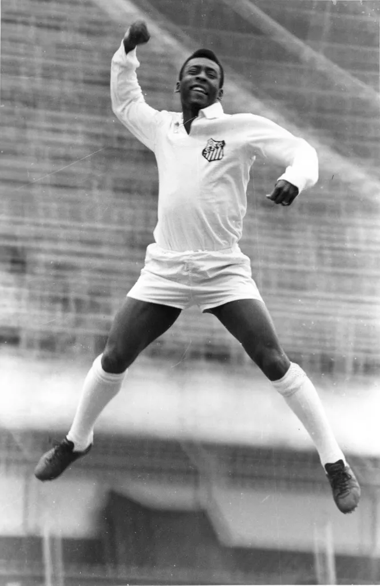

Sobre Pelé
Pelé, cujo nome verdadeiro é Edson Arantes do Nascimento, é considerado um dos maiores jogadores de futebol de todos os tempos. Nascido em 23 de outubro de 1940 em Três Corações, Brasil, Pelé é um ícone global e um verdadeiro símbolo do esporte.
Carreira
Durante sua carreira, Pelé jogou pela equipe do Santos Futebol Clube e pela Seleção Brasileira, conquistando três Copas do Mundo e marcando mais de 1000 gols em sua carreira.
Legado
Pelé deixou um legado duradouro no futebol e é lembrado não apenas por suas habilidades em campo, mas também por seu impacto cultural e social ao redor do mundo.